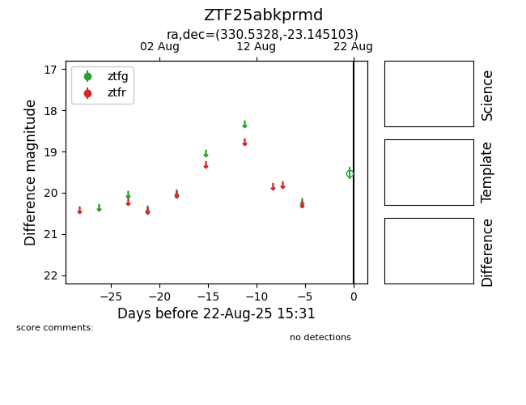

Target ZTF25abkprmd at 2025-08-22 15:31, see:
FINK: fink-portal.org/ZTF25abkprmd
Lasair: lasair-ztf.lsst.ac.uk/objects/ZTF25abkprmd
ALeRCE: alerce.online/object/ZTF25abkprmd
alt names
ZTF25abkprmd (ztf,alerce)
coordinates:
equatorial (ra, dec) = (330.5328,-23.14510)
galactic (l, b) = (29.2506,-51.65170)
photometry
